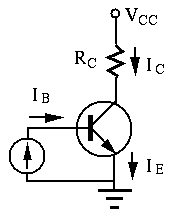
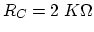
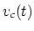
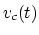
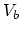

- In the circuit shown below, the two base resistors
 ,
the collector
,
the collector  . Assume the two transistors have the same
. Assume the two transistors have the same
 value and they each receive an input voltage ( and
value and they each receive an input voltage ( and  )
at either 0.2V or 5V. Find the output voltage
)
at either 0.2V or 5V. Find the output voltage  for the following
combinations of the inputs. (Hint: 5V input to a transistor will drive it
to saturation.)
for the following
combinations of the inputs. (Hint: 5V input to a transistor will drive it
to saturation.)
|
|
|
| 0.2 |
0.2 |
|
| 5.0 |
0.2 |
|
| 0.2 |
5.0 |
|
| 5.0 |
5.0 |
|

Solution: When , is cut-off. When ,
, is saturated with and
(instead of
 ). The same is
true for . From the table below we see that the circuit is a NOR
(Not OR) gate:
). The same is
true for . From the table below we see that the circuit is a NOR
(Not OR) gate:
|
|
|
| 0.2 |
0.2 |
5 |
| 5.0 |
0.2 |
0.2 |
| 0.2 |
5.0 |
0.2 |
| 5.0 |
5.0 |
0.2 |
- A BJT transistor with
 is set up as a common-base
configuration as shown in the figure below.
is set up as a common-base
configuration as shown in the figure below.

Solution:
,
,
, or
 .
.
If and  , can be estimated from
figure (b), and correspondingly, and . When
, , , and .
, can be estimated from
figure (b), and correspondingly, and . When
, , , and .
- In the figure below, the transistor with and
 is set up as a common-emitter circuit. The
base-emitter pn-junction is forward biased with
is set up as a common-emitter circuit. The
base-emitter pn-junction is forward biased with  ,
, and
,
, and  . Find
. Find  , ,
, ,  ,
,
 , and . Is the collector-base pn-junction forward
or reverse biased? (Assume the voltage across a forward biased
pn-junction is .)
, and . Is the collector-base pn-junction forward
or reverse biased? (Assume the voltage across a forward biased
pn-junction is .)

Solution:
Since the base-emitter pn-junction is forward biased with  ,
we have
, the collector-base pn-junction
is reverse biased.
,
we have
, the collector-base pn-junction
is reverse biased.
- The figure (A) below shows a common-emitter transistor
applification circuit (silicon) with, ,
and
.
- The base current is
 .
Find
.
Find  and  as functions of time.
and  as functions of time.
- Repeat the above for
.
- Repeat the above for
 .
.
For each of the three cases above, sketch the output (collector)
characteristics ( vs
vs  ) as shown in class show the wave
forms of
) as shown in class show the wave
forms of  , and , following the example
in the lecture notes:
http://fourier.eng.hmc.edu/e84/lectures/ch4/node7.html.
, and , following the example
in the lecture notes:
http://fourier.eng.hmc.edu/e84/lectures/ch4/node7.html.
Note: As the convention in the schematics of transistor circuits,
the bottom horizontal line is treated as the ground, and all voltages,
such as ,  and
and  are measured with respect to the
ground as the reference point.
are measured with respect to the
ground as the reference point.
Hint: The relationship  is only valid in the
linear region in the middle range of the load line. However, in
the cut-off region (close to the horizontal axis) and the saturation
region (close to the vertical axis), the above relationship no
longer holds and the actual output current and
is only valid in the
linear region in the middle range of the load line. However, in
the cut-off region (close to the horizontal axis) and the saturation
region (close to the vertical axis), the above relationship no
longer holds and the actual output current and  can
only be found graphically in the output characteristic plot.
can
only be found graphically in the output characteristic plot.

Solution:
-
-
Clipping happens during the negative half-cycle due to saturation.
-
Clipping happens during the positive half-cycle due to cut-off.
- Now assume an emittor resistor
is added between
emittor of the transistor and ground in the circuit above (figure (B)
above). Find the voltages as well as when the base
current is
. Sketch the waveformes
of the two voltages.
Solution: